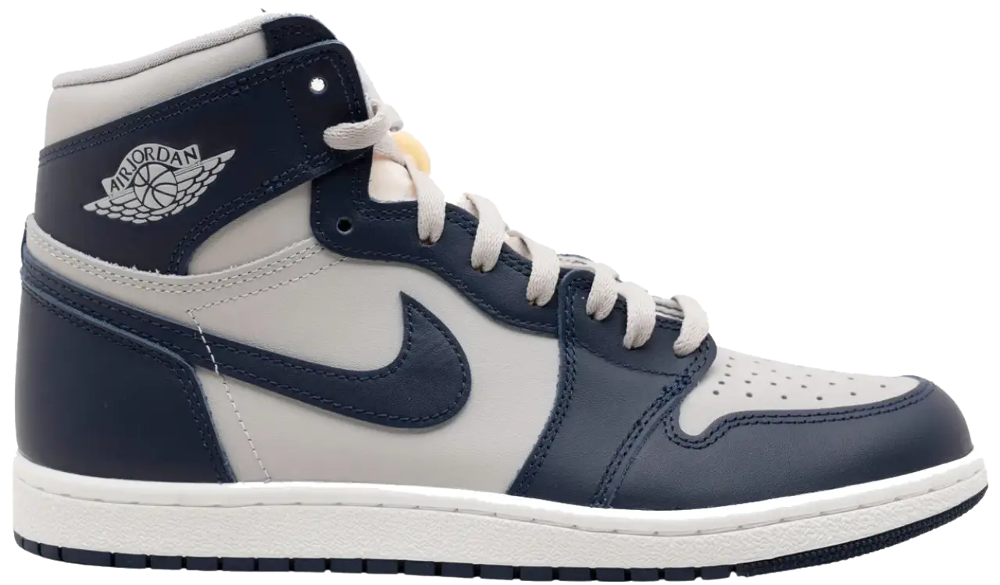
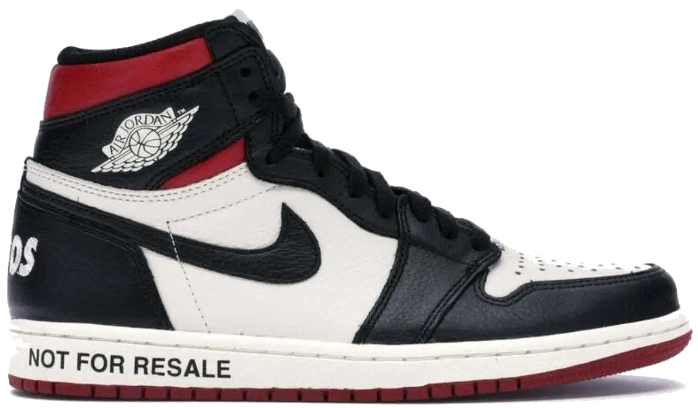
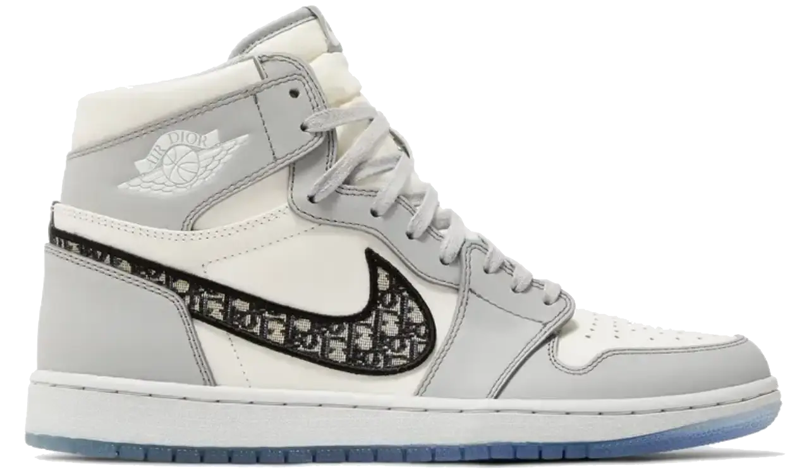
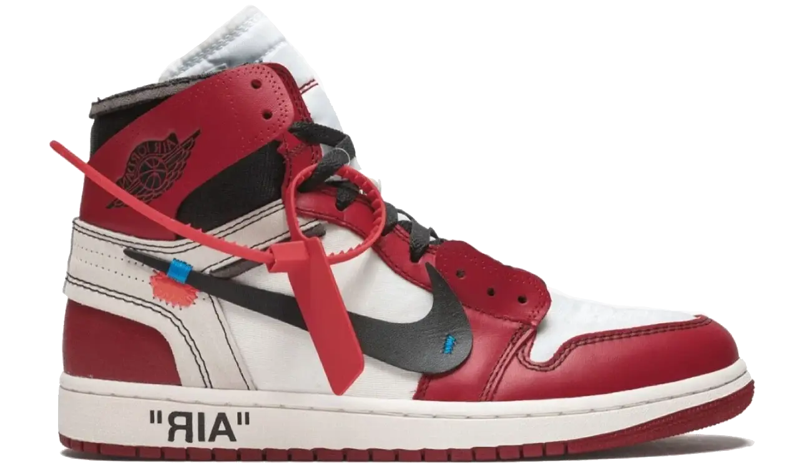
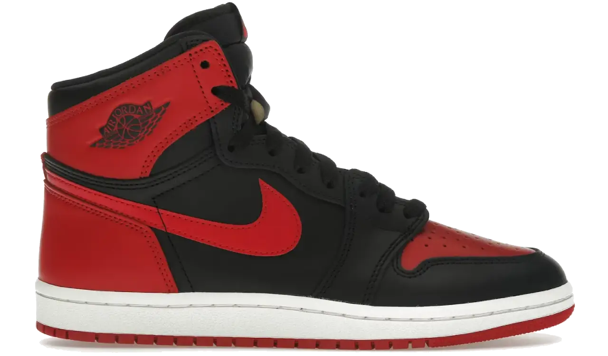
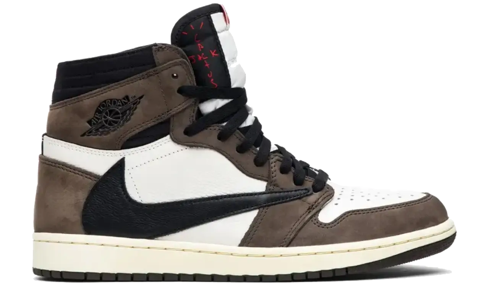
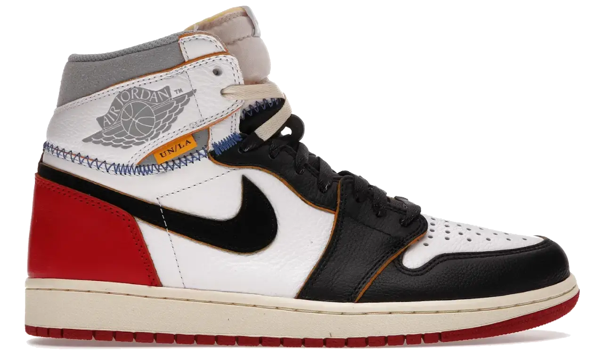
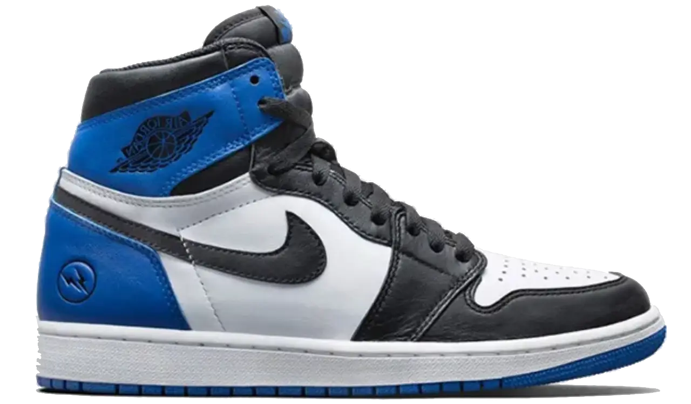
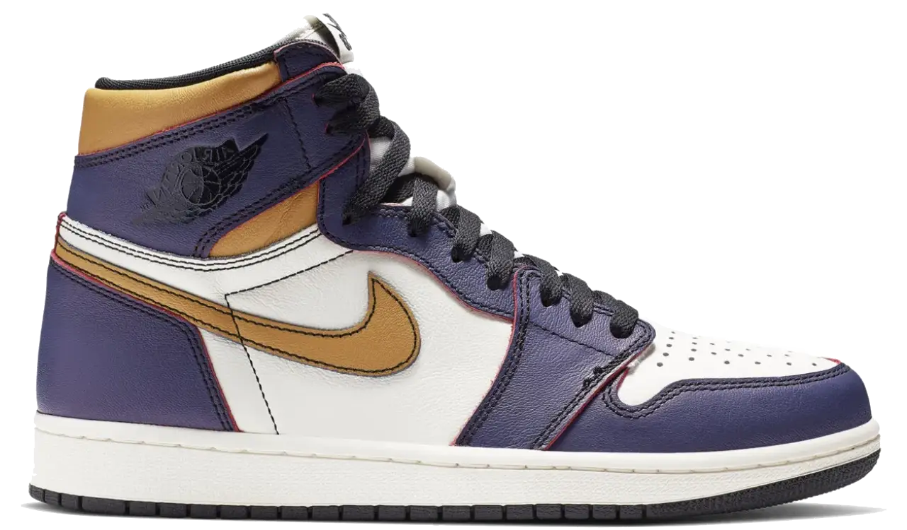

Air Jordan 1 High 'University Blue'
The brand drops Air Jordan 1s in endless color variations. While standing out is hard for basic releases, the soft baby blue paying homage to Michael Jordan's iconic alma mater leaves a strong, lasting impression. This pair is easily among the very best non-OG colorways ever crafted for the silhouette.
Learn More arrow_right_altAir Jordan 1 High 'Georgetown'

The signature navy and gray palette of the Hoyas brings out the best in almost any silhouette. Released to celebrate MJ's game-winning shot against Georgetown in the 1982 NCAA Championship game, this pristine edition remains an absolute highlight of the annual remastered '85 lineup.
Learn More arrow_right_altAir Jordan 1 High 'Not for Resale'

Despite explicit text warning buyers off, this clever release from a massive banner year remains a white-hot commodity across secondary markets. Telling people what they should not do always makes the action more enticing. Lace them up, wear them outside, and enjoy the classic look.
Learn More arrow_right_altDior x Air Jordan 1 High

Masterminded by top designer Kim Jones, this luxury collaboration took the entire sneaker world by storm. Featuring extremely limited production numbers and a massive retail price, these legendary high-tops set the standard for high-fashion streetwear flexes across the entire globe.
Learn More arrow_right_altOff-White x Air Jordan 1 High 'Chicago'

As the undisputed crown jewel of Virgil Abloh's iconic collection, this deconstructed take on an original colorway is legendary. It presents a masterful blend of conceptual design and pure heritage style, creating an untouchable holy grail that most sneaker enthusiasts can only dream of owning.
Learn More arrow_right_altAir Jordan 1 High 'Bred'

This iconic pair represents the ultimate origin point of modern sneaker culture as we know it today. Rich in history and legendary heritage, this standard-setting colorway remains an unmatched masterpiece of basketball style, earning its rightful place at the very top of every list imaginable.
Learn More arrow_right_altTravis Scott x Air Jordan 1 High 'Mocha'

Rich mocha brown suede panels make this collaborative release an instant classic, but the inverted Swoosh logo steals the show completely. Adding such a unique touch to an already iconic high-top frame is a major challenge, yet Cactus Jack executed the entire concept with effortless precision and flair.
Learn More arrow_right_altUnion x Air Jordan 1 High 'Black Toe'

This major release stood out as the absolute highlight of a huge year for footwear. The brilliant mashup of original colorways locked in Union as a top-tier industry collaborator, while future follow-up releases successfully continued to build upon that tremendous legacy with exceptional style.
Learn More arrow_right_altFragment Design x Air Jordan 1 High

When Hiroshi Fujiwara designs a sneaker, the culture pays close attention. This minimalist collaboration uses a simple layout of black, white, and royal blue leather to achieve a timeless aesthetic, proving that subtle detail and clean execution will always beat out overly complicated design choices.
Learn More arrow_right_altNike SB x Air Jordan 1 High 'LA to Chicago'

High-top basketball shoes have deep roots in skateboarding history, and this pair celebrates that connection directly. The Lakers outer paint wears down with actual use to reveal the classic Chicago colors underneath, giving wearers plenty of reason to lace up, hit the pavement, and skate hard every day.
Learn More arrow_right_alt